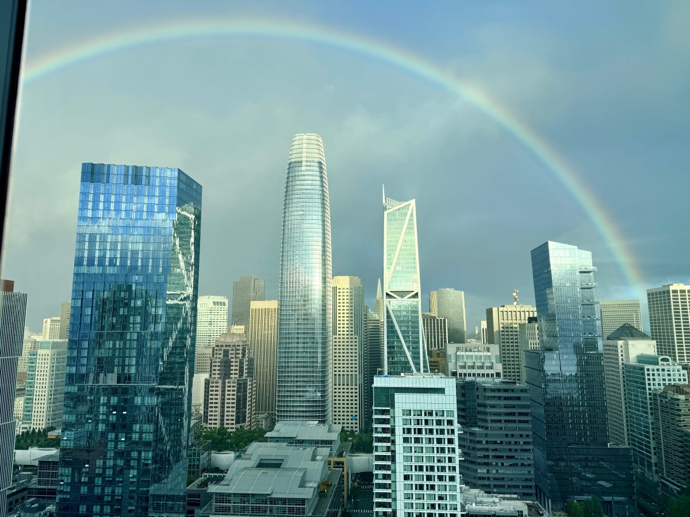

Even in July, the city can sit comfortably in the 50s, wrapped in fog that shapes everything from appetite to ritual.

You wake to sunlight pouring through the window, only to step outside and feel the unmistakable chill of the Pacific drifting in. The sky is bright, the air is sharp, and the wind carries that mix of salt, eucalyptus, and coffee that feels uniquely San Francisco.
Even in summer, the city often lives in layers—fog rolling over the hills, a marine layer settling along the coast, temperatures hovering in the 50s while the rest of California bakes. It's the kind of place that inspires entire essays about why summer here feels like fall .
This is the rhythm of San Francisco: weather that keeps you awake, food that keeps you exploring, and neighborhoods that feel like chapters in a book you never want to finish.
Markets, Makers, and the Global Pantry
A Saturday morning at the Ferry Building Marketplace is a masterclass in culinary diversity. The air smells like peaches, sea salt, and fresh coffee. You wander past baskets of stone fruit from the Central Valley, handmade dumplings, heirloom tomatoes, and wheels of cheese that taste like entire landscapes.
It's the kind of place where dinner plans form themselves: a handful of herbs, a loaf of sourdough, a jar of something you've never tried before. Cooking becomes a way of traveling without leaving the kitchen.
If you want to plan your visit with intention, there are excellent guides to eating your way through the Ferry Building, like Eater SF's Ferry Building guide and San Francisco Travel's overview .
When you're ready to explore beyond the waterfront, citywide guides like The Infatuation's best restaurants in San Francisco and Eater SF's essential restaurants map out everything from dim sum counters to tasting menus.
Neighborhoods That Cook in Their Own Language
Each neighborhood carries its own flavor profile—its own rhythm.
- Chinatown — steamed buns, herbal shops, hand-pulled noodles, and the hum of generations. A good starting point: Chinatown neighborhood guide .
- Mission District — masa, murals, bakeries, taquerias, and the warmest microclimate in the city. Explore via this Mission District overview .
- North Beach — espresso, focaccia, old-world Italian kitchens, and late-night poetry. Learn more with this North Beach guide .
- Japantown — ramen steam, mochi, izakayas, and quiet side streets. Start with the Japantown neighborhood guide .
- Richmond District — Russian bakeries, Burmese tea leaf salads, dim sum, and fog-kissed evenings. Get a feel for it through this Richmond District overview .
Together, they're a reminder that San Francisco isn't just a city—it's a collection of culinary worlds stitched together by hills and ocean wind.
Restaurants and Food Experiences Worth the Journey
San Francisco rewards the curious eater. A few places and experiences that define the city's rhythm:
- Swan Oyster Depot — a seafood counter with a line that feels like a rite of passage. Read more about its cult status .
- Tartine Bakery — morning buns, country loaves, and the scent of butter drifting down Guerrero Street. Visit Tartine's San Francisco bakery page .
- Zuni Café — the roast chicken that launched a thousand imitations. Learn more at zunicafe.com .
- House of Prime Rib — old-school, iconic, unapologetically San Francisco. Details at houseofprimerib.net .
- State Bird Provisions — dim-sum-style California cooking that feels like a celebration. Visit statebirdsf.com .
For a broader view of what's new and what endures, citywide lists like The Infatuation San Francisco and Eater SF are excellent companions.
The Weather Rule Every Local Knows
The most San Francisco moment often happens before the first bite: stepping outside with a market tote or dinner reservation in mind, only to realize the fog has rolled in sideways and the temperature has dropped ten degrees.
This is why the city's unofficial rule pairs perfectly with its food culture: check the weather app before you leave. Even in July. Especially in July.
The cool air makes a bowl of noodles taste better, a bakery line feel cozier, and a Ferry Building stroll more alive. Weather and appetite move together here.
A Rhythm That Leads Back to the Kitchen
This story lives in Rhythm because it's about movement—across neighborhoods, across coasts, across seasons. But it naturally opens a door into the Kitchen: the ingredients you bring home, the dishes inspired by a morning at the market, the way travel shapes what you cook.
From here, you might:
- Build a market-to-table dinner inspired by the Ferry Building's seasonal produce.
- Create a fog-day menu: brothy noodles, slow-roasted meats, and warm desserts.
- Translate a favorite neighborhood—Chinatown, the Mission, North Beach—into a night at home in your own kitchen.
From Rhythm to Kitchen: link this post to your San Francisco-inspired recipes, pantry notes, or market-driven menus.
Planning your San Francisco adventure? For comprehensive guides to neighborhoods, restaurants, events, and insider tips, visit San Francisco Travel—the official destination marketing organization for the city. It's an invaluable resource for anyone wanting to experience San Francisco like a local.